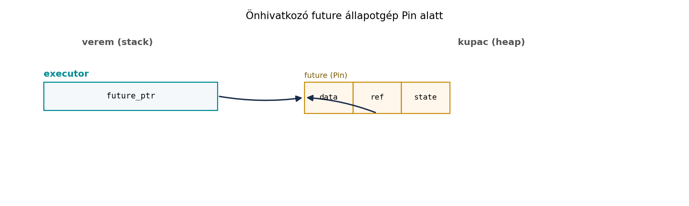

Tegyük fel, hogy egy C++ osztály az objektumon belül tárolt mezőre mutató pointert tárol. Ha az objektumot áthelyezzük (move), a pointer a régi helyre mutat, hacsak a move konstruktor nem frissíti:
struct SelfRef {
int data;
int* p; // az objektumon belüli mezőre mutat
explicit SelfRef(int x) : data{x}, p{&data} {}
};
SelfRef a{1};
SelfRef b = std::move(a); // az implicit move bitenként másol: b.p még &a.data
// b.p != &b.data: elavult hivatkozásFontos a különbség egy kupacpuffer birtokosa és egy
objektumon belüli cím között. Ha a data egy
std::vector<int> lenne, és a p az
elemére mutatna (&data[0]), a vektor move-ja a
kupacpuffer címét nem változtatná meg (csak a birtokló
struktúra költözik), ezért az ilyen p a move után is
érvényes marad; az invalidálás ott a vektor növekedésekor (reallokáció)
lép fel. Az önhivatkozás problémája az objektumon belül tárolt
(inline) mezőre mutató cím, mert az az objektummal együtt elmozdul. A
javított C++ osztály kézzel írt move konstruktora ezt frissíti:
SelfRefFixed(SelfRefFixed&& other) noexcept : data{other.data}, p{&data} {}A Rust async/await modelljében a fordító által generált future-ök
gyakran hasonlóan önhivatkozóak: a future egy belső állapotgépet
tartalmaz, amelyben a helyi változók egymásra hivatkozhatnak. Ha ezt a
future-t megmozgatnánk, a belső referenciák érvénytelenné válnának. A
Rust ezt a Pin típussal és az Unpin
automatikus traittel zárja ki.
Definíció. A Pin<P> egy olyan
wrapper, ahol P pointer típus – leggyakrabban
&mut T vagy Box<T>. Ha
T nem Unpin, a
Pin<P> garantálja, hogy az általa mutatott
T érték attól kezdve, hogy pinned lett, a pointee
eldobásáig nem mozdul el (a Pin<&mut T>
fogantyú eldobása ezt a kötelezettséget nem oldja fel) a memóriában. A
garancia azt jelenti, hogy a Pin<&mut T>-ből nem
kaphatunk közvetlen &mut T hozzáférést, így nem
hívhatunk olyan műveletet, amely a T-t mozgatná (például
mem::swap, mem::replace).
Definíció. Az Unpin egy automatikus
trait. Ha egy típus Unpin, akkor biztonságosan mozgatható
pinned állapotban is. A legtöbb primitív és standard típus
(i32, String, Vec<T>)
Unpin. A generált async future-k általában
nem Unpin, mert önhivatkozóak lehetnek. Ha
T: Unpin, akkor Pin<&mut T>
egyszerűen &mut T-re dereferálható.
Szabály. A Future trait
poll metódusának aláírása:
fn poll(self: Pin<&mut Self>, cx: &mut Context<'_>) -> Poll<Self::Output>;A self: Pin<&mut Self> azt jelenti, hogy a
poll implementáció csak pinned referencián keresztül kapja meg a
future-t. Ezért a jövőbeni poll hívások között a future nem
mozgatható, és a belső önhivatkozások érvényesek maradnak.
A Pin létrehozásának leggyakoribb módjai:
Box::pin(future) – heapre pin-neli a future-t,
Pin<Box<F>> típust ad vissza. Ez akkor hasznos,
ha a future-t hosszabb ideig szeretnénk tárolni, például egy
Vec-ben tárolt vagy függvényből visszaadott future-höz (a
tokio::spawn-nak nem kell, az maga allokál és pinel).std::pin::pin! makró – stackre pin-neli az értéket,
Pin<&mut T>-t ad.unsafe Pin::new_unchecked – csak akkor, ha
a fejlesztő garantálja, hogy a T (a !Unpin
pointee) a pointee eldobásáig nem mozdul és nem
érvényteleníthető; a Pin fogantyú eldobása nem szünteti meg
a kötelezettséget.A Pin projekció a pinned struktúra mezőinek elérését
jelenti. Ha egy !Unpin típusba beágyazott mezőt szeretnénk
elérni, nem kapunk közvetlen hozzáférést, mert a mező mozgatása sértheti
a garanciát. Ezt unsafe blokkal vagy erre szolgáló
crate-ekkel (például pin-project) lehet megoldani; a
részletes projekció kívül esik a jelen alfejezet hatókörén.
C++-ban az önhivatkozó objektumok mozgatása a fejlesztő felelőssége,
és a move konstruktorban kell frissíteni a belső mutatókat. Rustban ezt
a kölcsönzés-ellenőrző és a Pin együttese szabályozza. Az
async függvény által generált future egy olyan struktúra, amely a helyi
változókat tartalmazza, és a köztük lévő kölcsönzéseket a generált
kódban referencia-mezőkként reprezentálja. A Rust fordító ezt a future-t
!Unpin-ként jelöli, így a poll-hoz csak
Pin<&mut Self>-et használhatunk, ami kizárja a
mozgatást.
async fn example() {
let data = vec![1, 2, 3];
let r = &data;
tokio::time::sleep(std::time::Duration::from_millis(100)).await;
println!("{:?}", r);
}Ebben a példában a r referencia a data-ra
mutat, és az await alatt is él. Ha a future-t
megmozgatnánk, a r elavulna. A Pin garancia
miatt ez nem történhet meg.
Rc a future-ben és a Send-határA tokio::spawn megköveteli, hogy a future
Send + 'static legyen, mert a tokio más szálakra is
mozgathatja a taskot. A future akkor Send, ha minden benne
birtokolt érték Send. Az Rc nem
Send, mert a referencia-számláló nem atomi. Ez a
leggyakoribb hiba, amikor egy async blokkban Rc-t
használunk, majd megpróbáljuk spawnolni.
Ez a változat szándékosan nem fordul le:
use std::rc::Rc;
use std::time::Duration;
use tokio::time::sleep;
async fn bad_future() {
let data = Rc::new(vec![1, 2, 3]);
sleep(Duration::from_millis(100)).await;
println!("len = {}", data.len());
}
#[tokio::main]
async fn main() {
tokio::spawn(bad_future());
}A hiba lényege (a pontos szöveg verziófüggő):
future cannot be sent between threads safely, és a
diagnosztika megjelöli az Rc-t mint nem Send
típust. A javítás: std::sync::Arc használata.
use std::sync::Arc;
use std::time::Duration;
use tokio::time::sleep;
async fn good_future() {
let data = Arc::new(vec![1, 2, 3]);
sleep(Duration::from_millis(100)).await;
println!("len = {}", data.len());
}
#[tokio::main]
async fn main() {
let handle = tokio::spawn(good_future());
// A JoinHandle megvárása nélkül a main visszatérhetne a task befejezése előtt.
if let Err(e) = handle.await {
eprintln!("a task hibával állt le: {e}"); // JoinError: pánik vagy megszakítás
}
}Az Arc atomi számlálót használ, ezért
Send + Sync, így a future megfelel a követelménynek. A
tokio::spawn maga pin-neli a future-t a heapre, ezért nincs
szükség explicit Box::pin-re. A main megvárja
a JoinHandle-t, különben a runtime a program kilépésekor
megszakíthatná a még futó taskot, és a példa futáskor nem írná ki a
len = 3 sort; a JoinError a task pánikját vagy
megszakítását jelzi. (A tokio az operációs rendszeres szerver-környezet
runtime-ja; mikrovezérlőn no_std executort, például az
Embassyt használunk, lásd no_std, embedded-hal és
Embassy: Rust mikrovezérlőn.) Ha a futurében Rc marad,
és mégis egy szálon akarjuk futtatni, a
tokio::task::LocalSet és a spawn_local való,
mert az nem követel Send-et.
Hasonló probléma lép fel, ha a
std::sync::MutexGuard-ot tartjuk egy
.await-en át. A std guard nem
Send (a zárat azon a szálon kell elengedni,
amelyik megszerezte), ezért az a future, amelyben az
.await-en át él, nem Send, és a
tokio::spawn elutasítja:
Kódblokk — önálló példa · szándékosan hibás
· várt hiba: future cannot be sent between threads safely
(the trait Send is not implemented for std::sync::MutexGuard<'_, i32>)
use std::sync::{Arc, Mutex};
use std::time::Duration;
use tokio::time::sleep;
async fn process(mutex: Arc<Mutex<i32>>) {
let guard = mutex.lock().unwrap();
sleep(Duration::from_millis(50)).await; // a std guard az await-en át él
println!("value = {}", *guard);
}
#[tokio::main]
async fn main() {
tokio::spawn(process(Arc::new(Mutex::new(1)))).await.unwrap();
}A javítás: szűkítsük a lock élettartamát egy belső blokkra, hogy a
guard az .await előtt eldobódjon (futtatva:
value = 1):
use std::sync::{Arc, Mutex};
use std::time::Duration;
use tokio::time::sleep;
async fn process(mutex: Arc<Mutex<i32>>) {
{
let guard = mutex.lock().unwrap();
println!("value = {}", *guard);
} // a guard az await előtt eldobódik
sleep(Duration::from_millis(50)).await;
}
#[tokio::main]
async fn main() {
tokio::spawn(process(Arc::new(Mutex::new(1)))).await.unwrap();
}Az alábbi ábra a szabályt mutatja: a fordító a felfüggesztési ponton
(.await) átnyúló lokálisokból képzi a generált állapotgép
mezőit, és a future akkor Send, ha mindegyik mező
Send. A hibás változatban a std guard sávja
átnyúlik a felfüggesztési ponton, ezért !Send mező kerül a
future-be; a blokkba szűkített guard sávja előtte véget ér, így csak a
mutex marad mező.
A tokio::sync::MutexGuard viszont
Send (ha a védett típus Send) és
Sync (ha Send + Sync): az aszinkron zár nincs
szálhoz kötve, ezért az .await-en át tartott tokio guard
nem teszi a future-t !Send-dé, a
tokio::spawn elfogadja. Ez típus szerint
megengedett, de nem ingyenes: a zár az egész várakozás alatt foglalt
marad, a többi task blokkol rajta, és ha a várakozott művelet maga is
ugyanezt a zárat kérné, holtpont keletkezik. Ezért a tokio guardot is
csak akkor tartjuk .await-en át, ha a zár
szándékosan védi a várakozás alatti állapotot (például egy
kapcsolat kizárólagos írása).

Az ábra azt mutatja, hogy a future a heapre kerül, és a
Pin miatt a címe rögzített. A future struct egyik mezője
(data) a tényleges adatot tartalmazza, egy másik mezője
(ref) a data-ra mutat. Ha a future-t
megmozgatnánk, a ref elavulna; a Pin ezt
akadályozza meg.
A Rust stabilizálta az async fn-eket trait-ekben (Async Fn in Trait,
AFIT). Ez lehetővé teszi, hogy egy trait metódusa async legyen. Fontos
azonban: a dyn trait objektum nem tud közvetlenül async
metódust hívni, mert az async fn visszatérési típusa
impl Future<Output = ...>, ami opak típus, és ezért
nem dyn-kompatibilis. A dyn Trait-ekhez vagy az async_trait
crate-et szokták használni (amely
Pin<Box<dyn Future<Output = …> + Send>>-t
állít elő egy makróval), vagy enum-alapú dispatch-et. A stabilizálás
pontos részletei és a dyn-kompatibilis async trait-ek esetleges későbbi
kiterjesztései verziófüggőek, ezért a konkrét Rust-verzió
dokumentációját ellenőrizni kell.
Az async fn trait-ekben a Rust 1.75-től stabil nyelvi
képesség (nem az edition függvénye: edition 2021-ben is elérhető).
Statikus generikus kódban használható (például
fn f<T: MyTrait>(t: T)), de a
dyn MyTrait objektumokon továbbra is korlátok vannak. Ezért
a gyakorlatban a trait-objektumos async kódnál gyakran az
async_trait-et alkalmazzák.
Rc a future-ben. Ha Rc-t használunk
egy async blokkban, a future !Send lesz, és
tokio::spawn-nal nem futtatható. Javítás:
használjunk Arc-ot, vagy ne tartsuk az Rc-t az
.await-en át, ha lehetséges.MutexGuard tartása .await
alatt. A std::sync::MutexGuard nem
Send; ha az async blokkban a guard az await-ig
él, a future nem lesz Send, és a tokio::spawn
elutasítja. A tokio::sync::MutexGuard Send,
így a future Send marad, de a zár a várakozás alatt
foglalt, ami teljesítmény- és holtpontkockázat.
Javítás: zárjuk blokkba a kritikus szekciót, és a
guardot az await előtt engedjük el.Pin félreértelmezése. A
Pin nem a T belső változását tiltja, hanem a
T mozgatását. Nem akadályozza meg például, hogy
&mut T-n keresztül módosítsuk az adatot, ha a típus
Unpin. Csak !Unpin típusoknál korlátozza a
mozgató műveleteket.Box::pin és pin! helytelen
választása. Ha a future-t rövid ideig, egy adott scope-ban
használjuk, a pin! elegendő; ha tárolni kell vagy vissza
kell adni, akkor Box::pin. A
Pin<Box<F>> Send lehet, ha
F: Send, így spawnolható.Továbbvitt eredmény. A Send-határok és
a Pin ismerete alapvető lesz a Tokio:
taskok, I/O, csatornák, select és megszakítás alfejezetben, ahol
spawn-olt taskokat készítünk, és az Az rkv hálózati
szerver: TCP, protokoll, kecses leállás alfejezetben, ahol a handler
future-öknek Send-nek kell lenniük, és a megosztott
állapotot a Mutex, RwLock, csatornák és a megosztott
rkv SharedStore-jával
(Arc<std::sync::Mutex<...>>) oldjuk meg. A
Pin garanciáját a Future::poll szignatúra
betartásakor használjuk.
Unpin a
legtöbb generált async future? Mi a különbség a Pin és az
Unpin között?SelfRef osztály, amelynek implicit move-ja nem frissíti a
belső pointert (a javított változatban a kézzel írt move konstruktor
igen). Magyarázd el, hogyan kerüli el a Rust ugyanezt a hibát a
Pin segítségével az async future-ökben.Rc<Vec<i32>>-ot használ, és próbáld
tokio::spawn-nal futtatni. Javítsd Arc-ra, és
indokold, miért lesz a future Send.use std::sync::{Arc, Mutex};
use tokio::time::{sleep, Duration};
async fn process(mutex: Arc<Mutex<i32>>) {
let guard = mutex.lock().unwrap();
sleep(Duration::from_millis(50)).await;
println!("value = {}", *guard);
}A tokio::spawn(process(..)) nem fordul le. Miért?
Módosítsd úgy, hogy a guard ne élje túl az
await-et, és a future Send legyen. Mi
változna, ha a std::sync::Mutex helyett a
tokio::sync::Mutex-et használnád
(lock().await)? Elég-e ez a csere a Send
követelményhez, és mit nyersz vagy veszítesz vele?
Store-t több task is
eléri. Milyen kombinációt választanál a megosztott
Store-hoz, hogy a handler future-ök Send-ek
legyenek? (Gondolj Arc, tokio Mutex vagy
RwLock használatára, és a lock élettartamának
minimalizálására.)Unpin, mert a fordító
a helyi változókat és a köztük lévő referenciákat egy structba
csomagolja; ha ezt a structot mozgatnánk, a belső referenciák
elavulnának. Az Unpin automatikus trait, amely azt jelzi,
hogy a típus pinned állapotban is mozgatható; a Pin pedig
olyan wrapper, amely a !Unpin típusok mozgatását
akadályozza meg.!Unpin-ek, és a Future::poll
csak Pin<&mut Self>-et kap, így a future nem
mozgatható az élettartama alatt. Ez garantálja, hogy a belső referenciák
mindig érvényesek maradnak, anélkül hogy a fejlesztőnek manuálisan
frissítenie kellene őket.use std::rc::Rc;
use std::time::Duration;
use tokio::time::sleep;
async fn bad() {
let data = Rc::new(vec![1, 2, 3]);
sleep(Duration::from_millis(100)).await;
println!("{:?}", data);
}
#[tokio::main]
async fn main() {
tokio::spawn(bad()); // hiba: future cannot be sent between threads safely
}Javítás Arc-cal:
use std::sync::Arc;
use std::time::Duration;
use tokio::time::sleep;
async fn good() {
let data = Arc::new(vec![1, 2, 3]);
sleep(Duration::from_millis(100)).await;
println!("{:?}", data);
}
#[tokio::main]
async fn main() {
tokio::spawn(good()).await.expect("a task pánikolt");
}Várt kimenet: [1, 2, 3]. (A JoinHandle
megvárása nélkül a main kilépne a task befejezése előtt, és
a program semmit nem írna ki.)
std::sync::MutexGuard nem
Send, és az .await-en át él, ezért a future
nem Send (tokio::spawn elutasítja). A javított
kód:async fn process(mutex: Arc<Mutex<i32>>) {
{
let guard = mutex.lock().unwrap();
println!("value = {}", *guard);
} // a guard az await előtt eldobódik
sleep(Duration::from_millis(50)).await;
}A tokio::sync::Mutex (lock().await)
önmagában is Send guardot ad, tehát a Send
követelményt a csere megoldaná, a kritikus szakasz viszont továbbra
is 50 ms-ig tartana: a többi task ennyit várna a zárra. Hosszú,
.await-et tartalmazó kritikus szakaszhoz a tokio mutex
való, rövid, .await-mentes szakaszhoz a (gyorsabb)
std mutex a blokkba szűkített guarddal.
SharedStore-ját (belül
Arc<std::sync::Mutex<Box<dyn Storage + Send>>>)
használjuk: a guard sosem él .await-en át, ezért a
std mutex elég és gyorsabb; a blokkoló (fájl-I/O-s)
műveletet spawn_blocking-be tesszük (Az
rkv hálózati szerver: TCP, protokoll, kecses leállás). A burkolás
nem teszi a tárolót Sync-ké:
RwLock<T>: Sync csak T: Send + Sync
esetén áll, a dyn Storage + Send pedig nem
Sync, ezért RwLock csak
Storage: Sync esetén adna több olvasót. Tokio-zár csak
akkor kell, ha a kritikus szakasz .await-et tartalmaz.A Pin a Rust válasza az önhivatkozó future-ök
mozgatásából eredő memóriabiztonsági problémára. A
Future::poll szignatúrája
self: Pin<&mut Self>, így a future nem mozgatható
a poll hívások között. Az Unpin automatikus trait jelzi,
hogy egy típus pinned állapotban is mozgatható; a generált async
future-k általában !Unpin. Box::pin és a
pin! makró pin-nelt future-öket hoz létre. A
tokio::spawn megköveteli, hogy a future
Send + 'static legyen; az Rc és a
.await-en át tartott std::sync::MutexGuard nem
Send, ezért helyettük Arc-ot és az
.await előtt eldobott (blokkba szűkített) guardot
használunk; a tokio::sync::MutexGuard Send, de
a zárat a várakozás alatt is foglalja. Az async fn traitekben (AFIT)
stabil, de dyn-kompatibilis használata korlátozott; ilyenkor
async_trait-et vagy enum-dispatchet alkalmazunk.
Továbbvitt eredmény: a Send-határok és a Pin ismerete
elengedhetetlen a Tokio: taskok, I/O, csatornák,
select és megszakítás és az Az rkv hálózati
szerver: TCP, protokoll, kecses leállás alfejezetekhez, ahol
spawn-olt taskok és megosztott állapotok kezelik ezeket.
std::pinpin! makró a Rust 1.68 óta stabil. A
tokio::sync::MutexGuard Send-tulajdonságát a
tokio dokumentációja rögzíti; a std::sync::MutexGuard nem
Send.